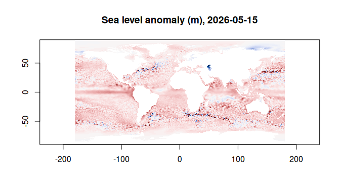
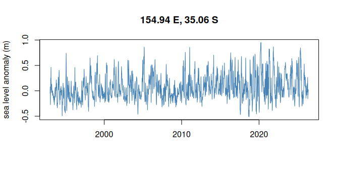
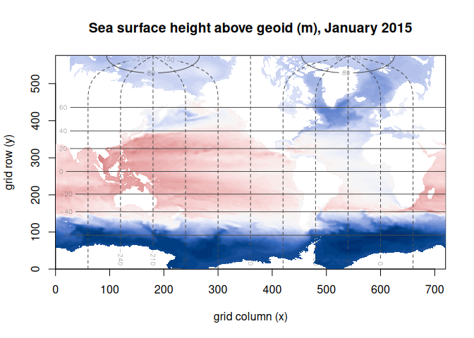
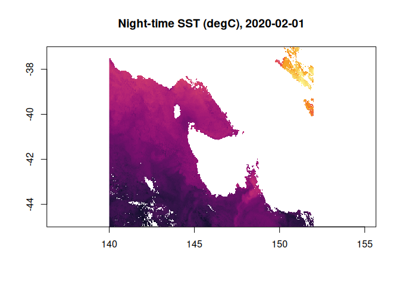
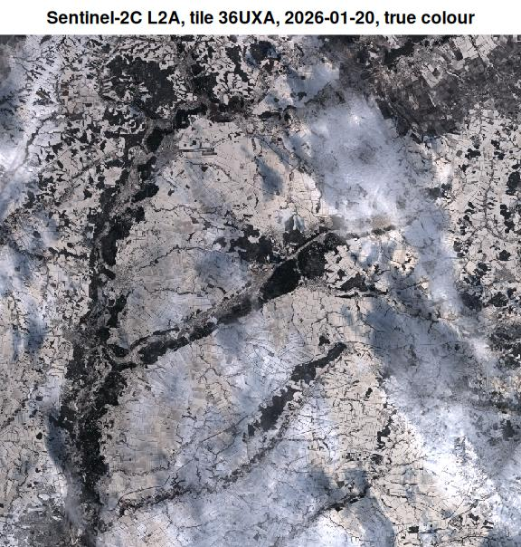
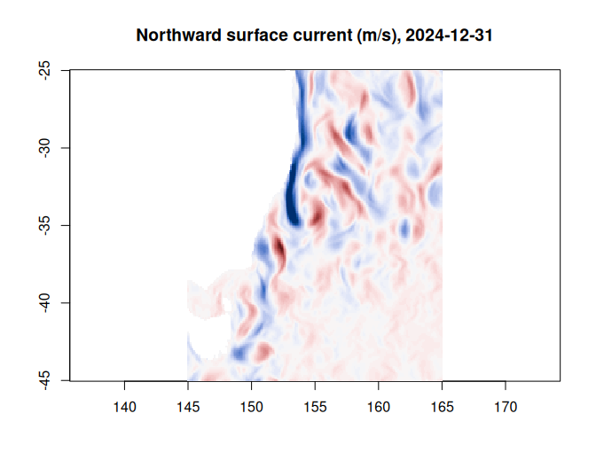

Public stores that zaro reads, across data providers, transports (HTTPS, S3, GCS) and formats (Zarr V2 and V3, sharding, NetCDF through references). Each section opens the store, shows a little of what is in it, and reads one picture’s worth of data.
| Store | From | Format | Transport | Shows |
|---|---|---|---|---|
| Sea level, time-chunked | Copernicus Marine | Zarr V2 | HTTPS | a global map from a lazy array, CF unpacking |
| Sea level, geo-chunked | Copernicus Marine | Zarr V2 | HTTPS | 33 years at one point in a few requests |
| CMIP6 sea surface height | Pangeo CMIP6 | Zarr V2 | gs:// |
a model’s curvilinear grid |
| Himawari-8 SST | AODN | Zarr V2, blosc | s3:// |
a window of a 4500 x 6000 grid |
| Sentinel-2 L2A | ESA EOPF | Zarr V3, sharded | HTTPS | true colour from bands in a nested group |
| BRAN2023 currents | CSIRO Bluelink at NCI | NetCDF, via VirtualiZarr | HTTPS (THREDDS) | byte ranges in NetCDF files read in place |
This article reads live data, so it is knitted ahead of time rather
than when the site is built (last on 2026-11-18). The same stores are
checked every week by the store gallery in the repository (gallery/),
which reads a small selection from each and reports any that stop
working. Other kinds of store, such as Kerchunk references, byterefs
tables and local files, are in virtual
stores and getting started.
The maps use base R’s image() and ximage. They want
different orders, and zaro gives both: a lazy array from
zaro_array() is in R order
(longitude, latitude), which is what image()
takes, while zaro_read() gives Zarr order
(latitude, longitude), which for a north-up grid is the
raster order ximage() takes.
library(zaro)
library(ximage)
options(zaro.verbose = FALSE) # zaro explains what it does by default
## values beyond the colour range drawn at its ends, not left blank
clamp <- function(z, lim) pmin(pmax(z, -lim), lim)
## raster order for a grid stored south to north: first row at the top
north_up <- function(m) m[nrow(m):1, , drop = FALSE]Sea level, time-chunked
Copernicus Marine’s global daily sea level, 1993 to the present at 1/8 degree, is published as two Zarr V2 copies of the same data. This one is chunked for maps: one day, 512 x 1024 pixels per chunk.
cmems_time <- zaro(paste0("https://s3.waw3-1.cloudferro.com/mdl-arco-time-045/arco/",
"SEALEVEL_GLO_PHY_L4_MY_008_047/",
"cmems_obs-sl_glo_phy-ssh_my_allsat-l4-duacs-0.125deg_P1D_202411/",
"timeChunked.zarr"))
ds <- zaro_dataset(cmems_time)
ds
#> <zaro_dataset> 17 array(s) [zaro::HttpStore]
#> adt int32 (longitude: 2880, latitude: 1440, time: 12188)
#> err_sla int32 (longitude: 2880, latitude: 1440, time: 12188)
#> err_ugosa int32 (longitude: 2880, latitude: 1440, time: 12188)
#> err_vgosa int32 (longitude: 2880, latitude: 1440, time: 12188)
#> flag_ice int32 (longitude: 2880, latitude: 1440, time: 12188)
#> lat_bnds float32 (nv: 2, latitude: 1440)
#> latitude float32 (latitude: 1440)
#> lon_bnds float32 (nv: 2, longitude: 2880)
#> longitude float32 (longitude: 2880)
#> nv int32 (nv: 2)
#> sla int32 (longitude: 2880, latitude: 1440, time: 12188)
#> time float32 (time: 12188)
#> tpa_correction int32 (time: 12188)
#> ugos int32 (longitude: 2880, latitude: 1440, time: 12188)
#> ugosa int32 (longitude: 2880, latitude: 1440, time: 12188)
#> vgos int32 (longitude: 2880, latitude: 1440, time: 12188)
#> vgosa int32 (longitude: 2880, latitude: 1440, time: 12188)
#> attributes: 43The arrays are int32, packed with a scale_factor. As a
lazy array with cf = TRUE they read as metres, with fill
values as NA, in R’s dimension order
(longitude, latitude, time). Indexing one day reads its
nine chunks.
sla <- zaro_array(ds, "sla", cf = TRUE)
dim(sla)
#> [1] 2880 1440 12188
day <- dim(sla)[3]
z <- sla[, , day]
lon <- as.vector(zaro_read(ds, "longitude"))
lat <- as.vector(zaro_read(ds, "latitude"))
date <- as.Date("1950-01-01") + as.vector(zaro_read(ds, "time"))[day]
image(lon, lat, clamp(z, 0.6), asp = 1, zlim = c(-1, 1) * 0.6, col = hcl.colors(64, "Blue-Red 3"),
xlab = "", ylab = "", main = sprintf("Sea level anomaly (m), %s", date))
Sea level, geo-chunked
The other copy has the same arrays chunked for time series: 2264 days of 16 x 8 pixels per chunk. 33 years at one point in the Tasman Sea is six chunks here; the time-chunked copy would need one per day.
cmems_geo <- zaro(paste0("https://s3.waw3-1.cloudferro.com/mdl-arco-geo-045/arco/",
"SEALEVEL_GLO_PHY_L4_MY_008_047/",
"cmems_obs-sl_glo_phy-ssh_my_allsat-l4-duacs-0.125deg_P1D_202411/",
"geoChunked.zarr"))
ilon <- which.min(abs(lon - 155))
ilat <- which.min(abs(lat - -35))
start <- c(0, ilat - 1, ilon - 1) # 0-based, Zarr order: time, latitude, longitude
count <- c(NA, 1, 1)
nrow(zaro_plan(cmems_geo, "sla", start = start, count = count))
#> [1] 6
nrow(zaro_plan(cmems_time, "sla", start = start, count = count))
#> [1] 12188
series <- zaro_array(cmems_geo, "sla", cf = TRUE)[ilon, ilat, ]
dates <- as.Date("1950-01-01") + as.vector(zaro_read(cmems_geo, "time"))
plot(dates, series, type = "l", col = "steelblue", xlab = "", ylab = "sea level anomaly (m)",
main = sprintf("%.2f E, %.2f S", lon[ilon], -lat[ilat]))
CMIP6 sea surface height
Pangeo’s CMIP6 archive on Google Cloud Storage: here GFDL-ESM4
monthly sea surface height under SSP5-8.5. cmip6 is a known
public bucket, so zaro reads it anonymously with no arguments. The ocean
grid is curvilinear (tripolar): x and y are
nominal, and lon and lat are 2D arrays. So the
map is drawn on the grid itself, in columns and rows, with contours of
lon (dashed, every 30 degrees) and lat (solid,
every 20) to show where it is: north of about 65 N the grid bends to two
poles, over Canada and Siberia. Land is the array’s fill value (1e20),
which cf = TRUE reads as NA.
cmip6 <- zaro(paste0("gs://cmip6/CMIP6/ScenarioMIP/NOAA-GFDL/GFDL-ESM4/",
"ssp585/r1i1p1f1/Omon/zos/gn/v20180701/"))
zaro_meta(cmip6, "zos")
#> <ZaroMeta> [array]
#> dtype: float32
#> shape: [1032 x 576 x 720]
#> chunks: [61 x 576 x 720]
#> dims: time, y, x
#> codecs: bytes -> blosc
#> fill: 1.00000002004088e+20
#> size: 1.6 GB
#> attrs: 8
zos <- zaro_array(cmip6, "zos", cf = TRUE)[, , 1] # x, y; the first month
dim(zos)
#> [1] 720 576
lon <- zaro_read(cmip6, "lon") # y, x
lat <- zaro_read(cmip6, "lat")
ximage(north_up(t(zos)), zlim = c(-1, 1) * max(abs(zos), na.rm = TRUE),
col = hcl.colors(64, "Blue-Red 3"), xlab = "grid column (x)", ylab = "grid row (y)",
main = "Sea surface height above geoid (m), January 2015")
xcontour(north_up(lat), add = TRUE, levels = seq(-60, 80, by = 20), col = "grey30", labcex = 0.6)
xcontour(north_up(lon), add = TRUE, levels = seq(-270, 30, by = 30), col = "grey30", lty = 2,
labcex = 0.6)
Himawari-8 sea surface temperature
AODN’s cloud-optimised GHRSST L3C night-time SST from Himawari-8 on S3, 2015 to 2022: a 4500 x 6000 grid at 0.02 degrees, float64 compressed with blosc. The window around Tasmania is four chunks. Gaps are cloud.
him <- zaro("s3://aodn-cloud-optimised/satellite_ghrsst_l3c_1day_nighttime_himawari8.zarr",
region = "ap-southeast-2", anonymous = TRUE)
lon <- as.vector(zaro_read(him, "lon"))
lat <- as.vector(zaro_read(him, "lat")) # north to south
time <- as.POSIXct(as.vector(zaro_read(him, "time")), origin = "1981-01-01", tz = "UTC")
ix <- which(lon >= 140 & lon <= 152)
iy <- which(lat >= -45 & lat <= -37)
it <- which(format(time, "%Y-%m-%d") == "2020-02-01")
sst <- zaro_read(him, "sea_surface_temperature", start = c(it, min(iy), min(ix)) - 1,
count = c(1, length(iy), length(ix)))
dim(sst)
#> time lat lon
#> 1 400 600The rows already run north to south, so the slice is in raster order as read; the extent is the outer edges of the 0.02 degree cells.
ext <- c(range(lon[ix]), range(lat[iy])) + c(-1, 1, -1, 1) * 0.01
ximage(sst[1, , ] - 273.15, extent = ext, asp = 1 / cos(41 * pi / 180), # kelvin to degC
col = hcl.colors(64, "Inferno"),
main = sprintf("Night-time SST (degC), %s", format(time[it], "%Y-%m-%d")))
Sentinel-2 L2A
ESA’s EOPF Sentinel-2 products are Zarr V3: nested groups, each band
one shard of 183 x 183 chunks, compressed with blosc.
zaro_groups() lists the groups; a dataset opens one of
them.
eopf <- zaro(paste0("https://s3.explorer.eopf.copernicus.eu/esa-zarr-sentinel-explorer-fra/",
"tests-output/sentinel-2-l2a/",
"S2C_MSIL2A_20260120T084301_N0511_R064_T36UXA_20260120T122910.zarr"))
grp <- zaro_groups(eopf)
grp[grepl("^measurements", grp$group), ]
#> group arrays
#> 17 measurements 0
#> 18 measurements/reflectance 0
#> 19 measurements/reflectance/r10m 7
#> 20 measurements/reflectance/r120m 14
#> 21 measurements/reflectance/r20m 13
#> 22 measurements/reflectance/r360m 14
#> 23 measurements/reflectance/r60m 14
#> 24 measurements/reflectance/r720m 14
r120 <- zaro_dataset(eopf, group = "measurements/reflectance/r120m")
zaro_meta(r120$store, "measurements/reflectance/r120m/b04")
#> <ZaroMeta> [array]
#> dtype: float32
#> shape: [915 x 915]
#> chunks: [183 x 183]
#> shards: [915 x 915] (index at end)
#> dims: y, x
#> codecs: bytes -> blosc
#> fill: NaN
#> size: 3.2 MB
#> attrs: 6Red, green and blue reflectance at 120 m, three shards. It is January and the ground is snow-covered, so the reflectance needs no brightening.
bands <- lapply(c(red = "b04", green = "b03", blue = "b02"), function(b) zaro_read(r120, b))
dim(bands$red)
#> y x
#> 915 915
unit <- function(v) {
v <- pmin(pmax(v, 0), 1)
v[is.na(v)] <- 0
v
}
img <- array(unlist(lapply(bands, unit)), c(dim(bands$red), 3)) # y, x, bandThe bands are y, x from north to south, raster order, so
the RGB array goes straight to ximage().
par(mar = c(0, 0, 2, 0))
ximage(img, axes = FALSE, main = "Sentinel-2C L2A, tile 36UXA, 2026-01-20, true colour")
BRAN2023 currents
CSIRO’s Bluelink reanalysis (BRAN2023) is daily NetCDF files on NCI’s THREDDS server. A VirtualiZarr reference store (a Parquet file on GitHub) says where each chunk is in those files, and zaro reads the byte ranges in place: no copy of the data, no NetCDF library.
bran <- zaro(paste0("virtualizarr://https://raw.githubusercontent.com/mdsumner/",
"virtualized/refs/heads/main/remote/ocean_v_2023.parq"))
v <- zaro_array(bran, "v", cf = TRUE)
dim(v) # xu_ocean, yu_ocean, st_ocean, Time
#> [1] 3600 1500 51 5479
xu <- as.vector(zaro_read(bran, "xu_ocean"))
yu <- as.vector(zaro_read(bran, "yu_ocean"))
days <- as.Date("1979-01-01") + as.vector(zaro_read(bran, "Time"))
ix <- which(xu >= 145 & xu <= 165)
iy <- which(yu >= -45 & yu <= -25)
nt <- length(days)
z <- v[ix, iy, 1, nt]The plan for that read: byte ranges of one NetCDF file.
p <- zaro_plan(bran, "v", start = c(nt, 1, min(iy), min(ix)) - 1,
count = c(1, 1, length(iy), length(ix)))
p
#> <zaro_plan> 'v': 4 chunk(s), 4 request(s)
#> transport: http 4
#> bytes: 336.1 KB
#> hosts: thredds.nci.org.au
#> key transport offset size path
#> v/5478.0.0.4 http 6541854897 83553 ...BRAN2023/daily/ocean_v_2024_12.nc
#> v/5478.0.1.4 http 6543091171 44208 ...BRAN2023/daily/ocean_v_2024_12.nc
#> v/5478.0.0.5 http 6541938450 102453 ...BRAN2023/daily/ocean_v_2024_12.nc
#> v/5478.0.1.5 http 6543135379 113945 ...BRAN2023/daily/ocean_v_2024_12.nc
unique(basename(p$path))
#> [1] "ocean_v_2024_12.nc"
image(xu[ix], yu[iy], clamp(z, 1.2), asp = 1 / cos(35 * pi / 180), zlim = c(-1, 1) * 1.2,
col = hcl.colors(64, "Blue-Red 3"), xlab = "", ylab = "",
main = sprintf("Northward surface current (m/s), %s", days[nt]))